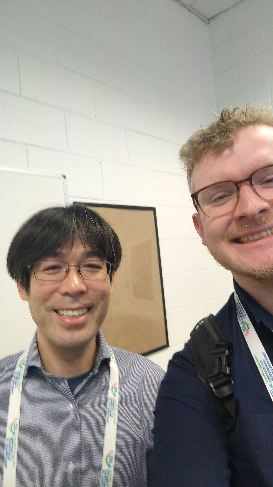
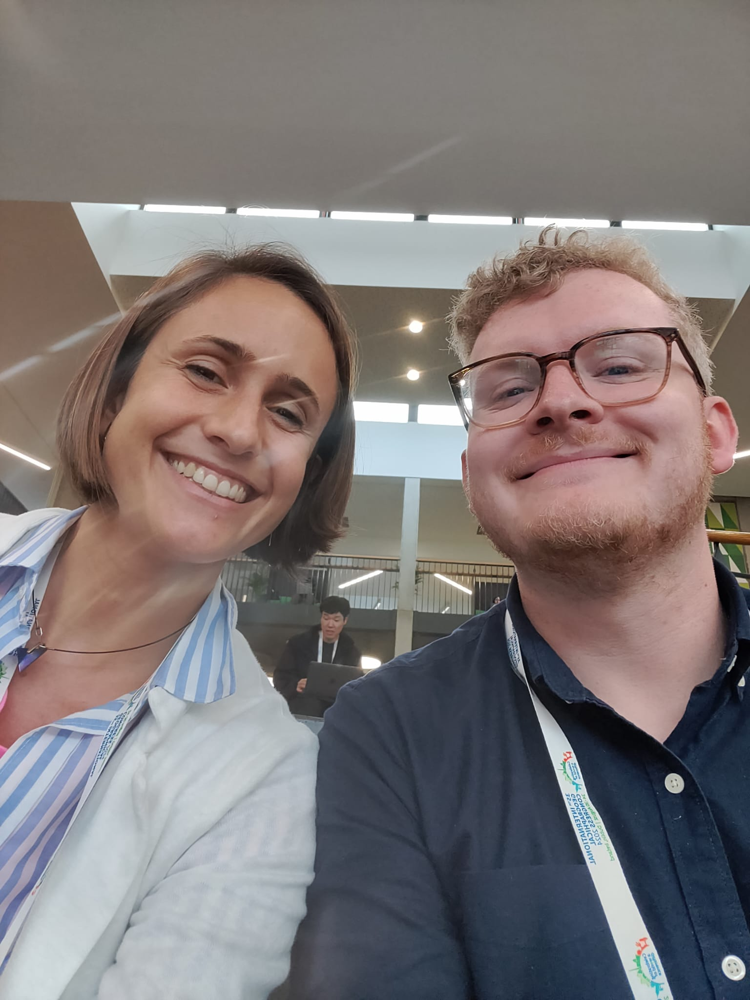
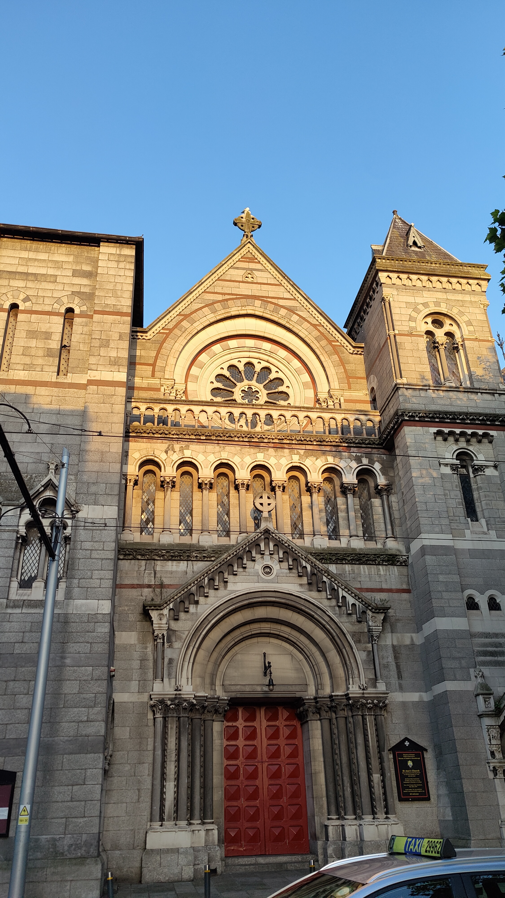
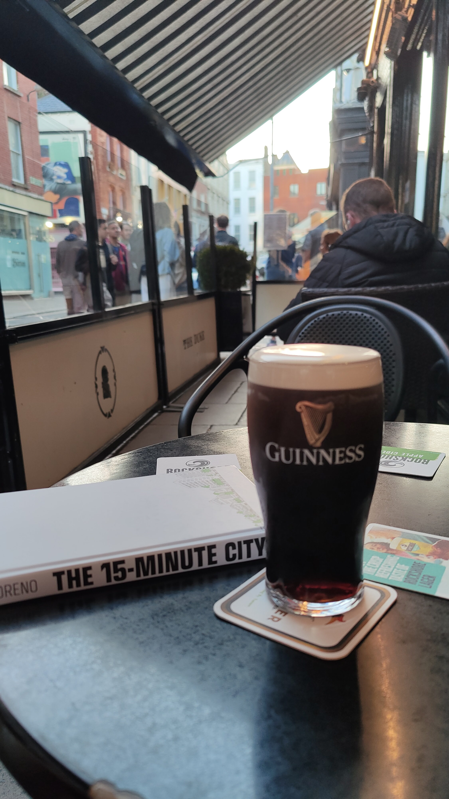
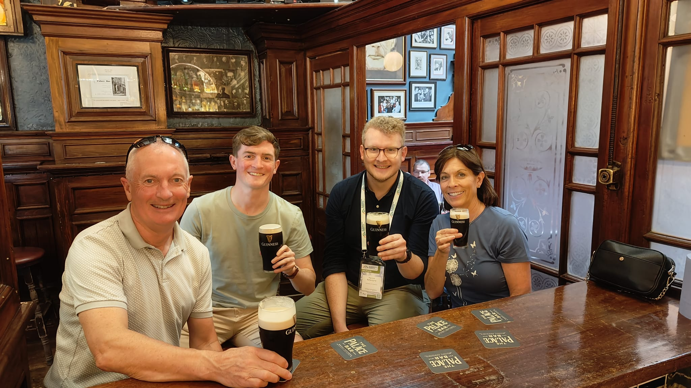

International Geographical Congress 2024
Dublic College University, Dublin, Ireland
35th International Geographical Congress 2024
I have just returned from a week at the International Geographical Congress in Dublin, Ireland. The conference, which happens every four years, brings together a really diverse group of geographers from across the world to discuss current and emerging research from a variety of the sub-disciplines of geography. I had a great week, and below I document some of my thoughts.

Applied Geography: Applied Smart Data Research
I presented some of my recent work in a session put together by the Applied Geography Commission, chaired by Nik Lomax from the University of Leeds. The paper I presented was a summary of our recent Heseltine Institute Policy Brief around the Economic Impact of Eurovision in Liverpool. My talk focused on showing the power of smart datasets such as Mastercard Geo Insights, and we had a lively discussion around the challenges of working with these data. This talk also gave me the opportunity to reflect on how I can generate an academic paper from the exploratory analysis conducted thus far.
Slides from my talk are available to view here.

Aside from my presentation, I enjoyed meeting (and reconnecting) with lots of cool people, and listening to lots of really nice talks! I particularly enjoyed spending time in Dublin, which despite spending a large amount of time in Ireland each year, I rarely get to do - of course I had to see if I could find my favourite pint of guinness too! :)
Photos
 



IGC Conference Programme
The IGC programme is available to view online here.